Android Auto on the dash
Maps, Waze or any Android Auto app on the MotoPlay screen over Wi‑Fi or Wi‑Fi Direct, with touch and pinch‑zoom.
| Release | 64-bit | armv7 | Total | Published |
|---|---|---|---|---|
| Loading… | ||||
New in 2.3: tyre pressure on the dash
Google Maps, Waze and your music on the MotoPlay screen over Wi‑Fi — plus tyre pressure, fuel range, rain alerts, ride reports and service reminders, from a phone in your pocket. No root, no PC.
Android 10+ · free & open source (AGPL‑3.0) · not on the Play Store, you install the APK
Works with dashes that show a MotoPlay / EasyConnect pairing QR — no T‑BOX needed
New in 2.3
Bluetooth valve‑cap TPMS sensors — the kind sold with the HR TPMS app — talk straight to My moto. No extra app. The dash side panel shows your bike with each tyre's pressure under its own wheel.
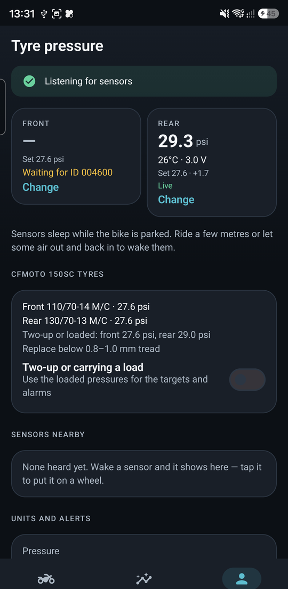
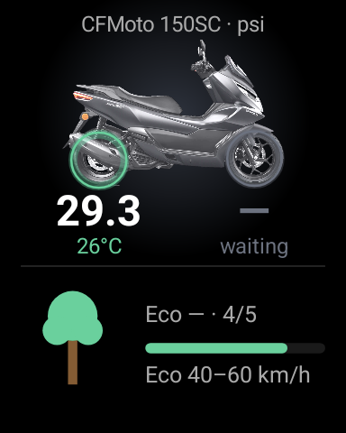
Everything else
Maps, Waze or any Android Auto app on the MotoPlay screen over Wi‑Fi or Wi‑Fi Direct, with touch and pinch‑zoom.
On touchless dashes the bar buttons drive Android Auto — tap, hold, double tap, every gesture remappable.
A column beside Android Auto with turn‑by‑turn, a live eco‑speed hint and a tree that grows while you ride smoothly.
Log fill‑ups, get your real km/L and cost per km, and see “⛽ ~185 km” counting down on the dash.
“Rain in 35 min” or “Rain ahead” on the side panel, from Open‑Meteo. Your position is rounded to about 1 km.
Every ride saved with its route, behaviour score and GPX export; a weekly summary of distance, eco % and fuel.
Your model's service schedule against the kilometres you've ridden, overdue reminders and receipt photos.
Everything in one file to move phones; a home‑screen widget with range, last ride and next service.
A look inside
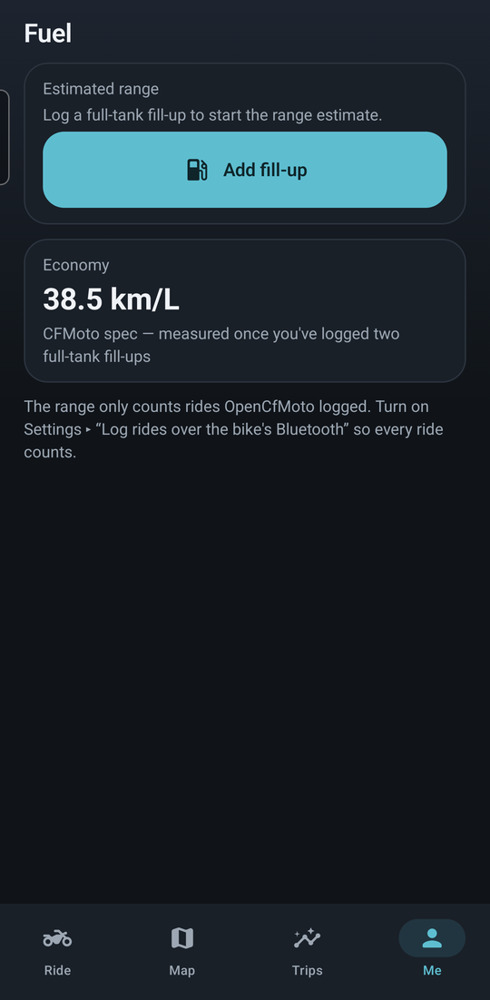
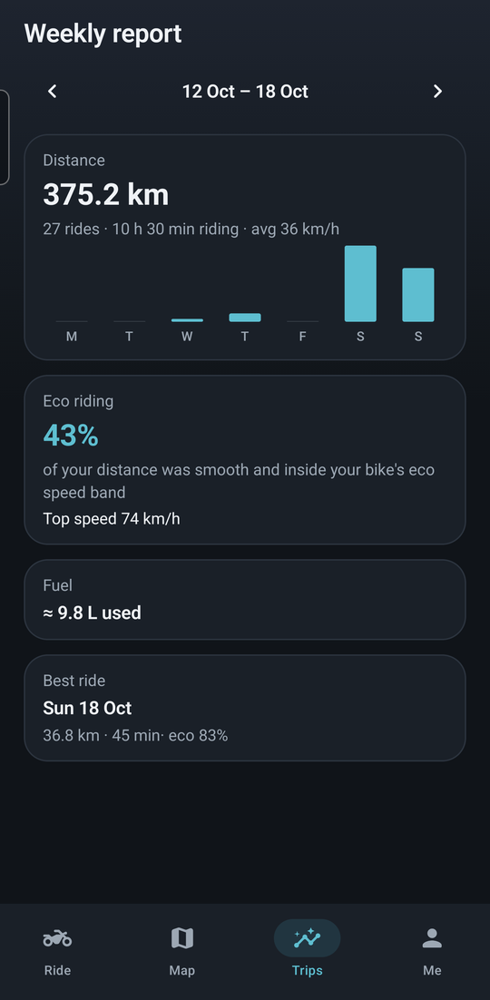
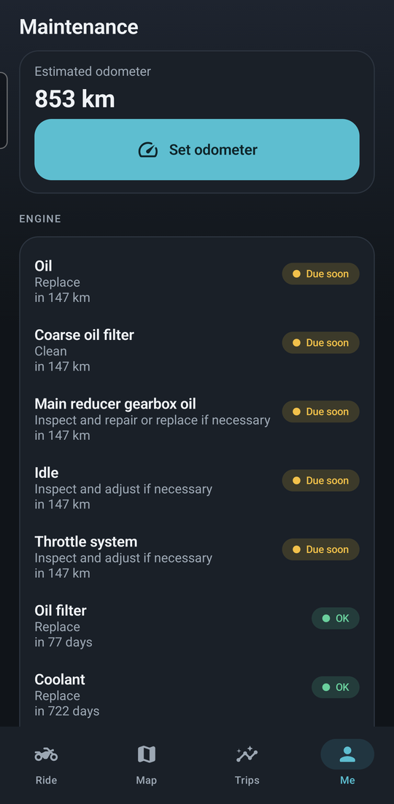
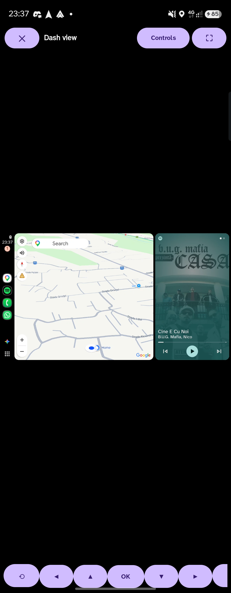
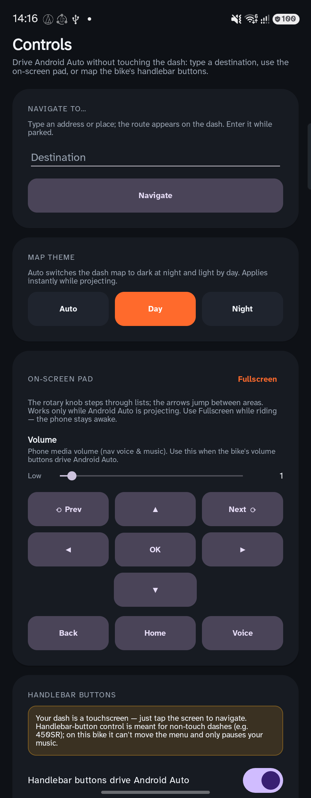
On real bikes
Community photos from CFMoto, Moto Morini, QJ Motor and Voge owners.
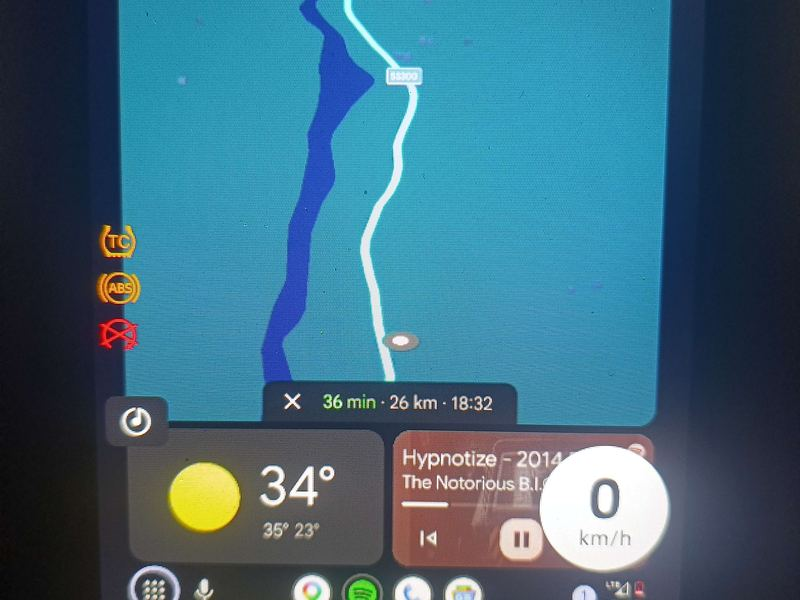
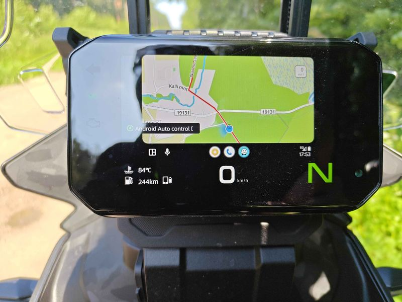
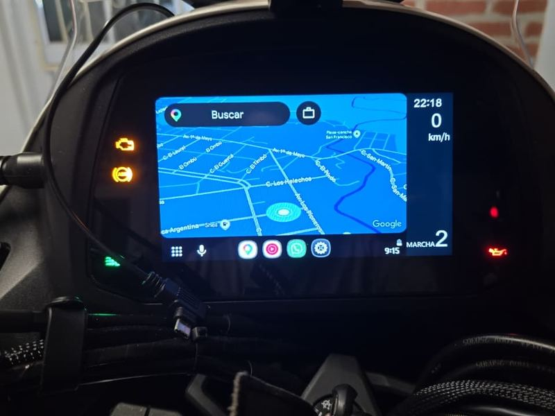
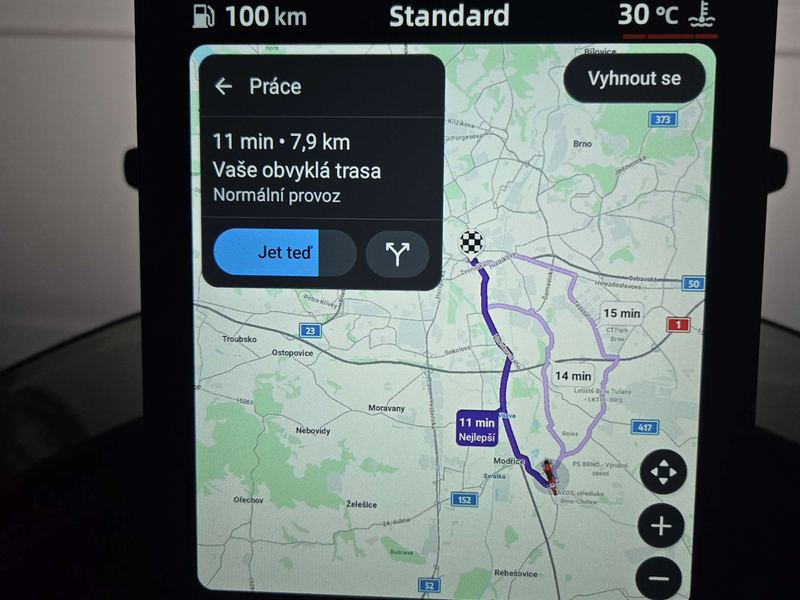
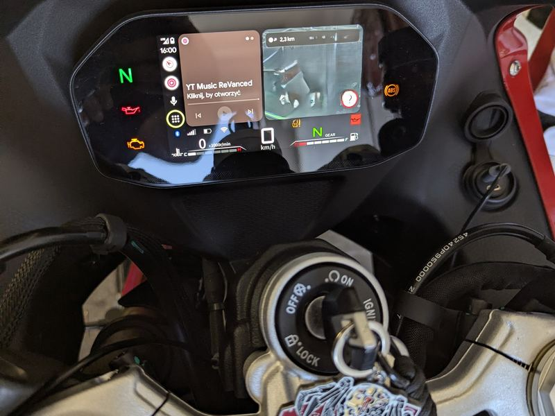
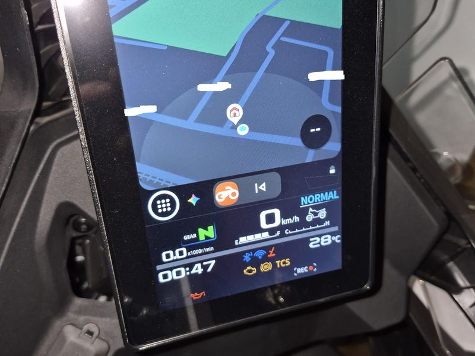
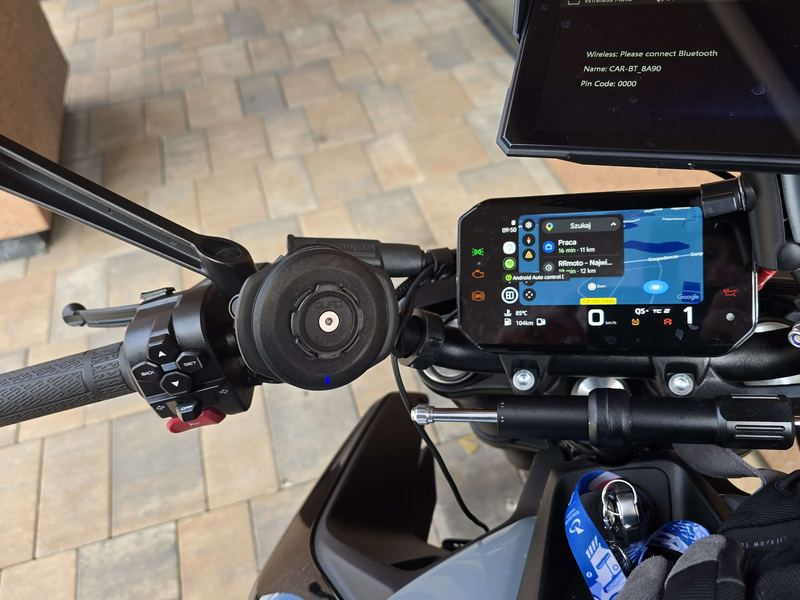
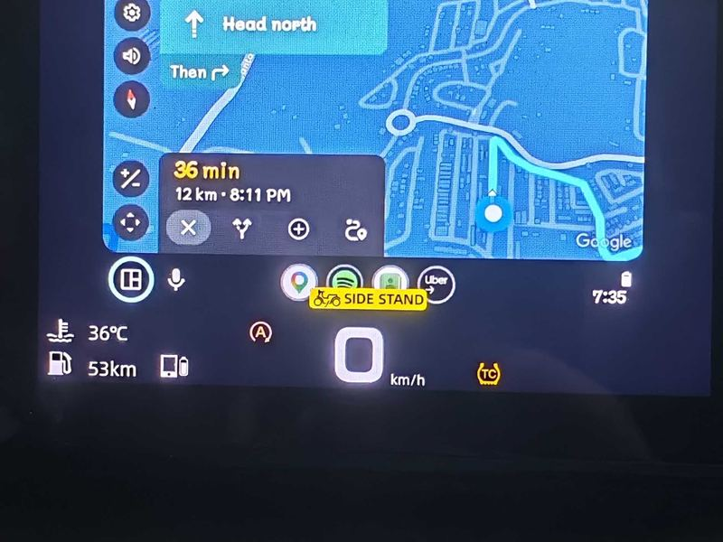
Get started
Parked, open the dash's MotoPlay / phone‑connection screen. If it shows a pairing QR code, My moto can connect.
Download OpenCfMoto.apk and open it. Android asks once to allow installs from your browser. 32‑bit phone? Use the armv7 build.
Tap Scan your bike, point the camera at the dash QR, then Connect. The app remembers your bike after that.
First time only: in Android Auto settings tap Version about 10 times, then ⋮ ▸ Start head unit server. Full steps.